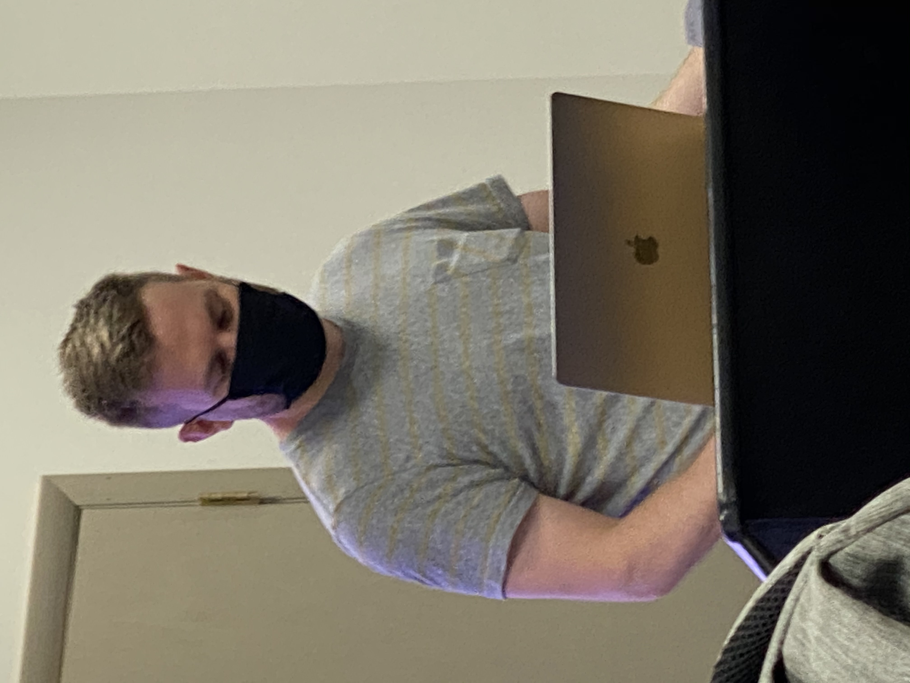

Taking your oblivious pictures and marketing off of them
NEWEST PHOTOS

Media by GoogletheMonkey: This recent photo is sure to shock fans. Not only is Isaac sitting at his laptop in the middle of class, but he's also just working on his lizard website (Lot's O'
Lizards). I for one am confused and scared.